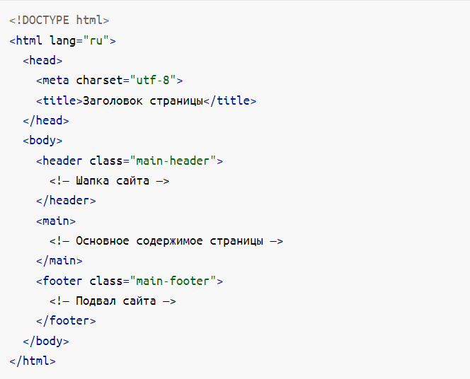

Обзор семантики
Слово «семантический» уже слилось с веб-разработкой. Мы произносим «семантический код» и «семантика» элемента, но что это значит на самом деле и почему так важно? Хорошее определение дает Википедия.
Семантическая вёрстка, или семантический HTML-код, — это подход к созданию веб-страниц на языке HTML, основанный на использовании HTML-тегов в соответствии с их семантикой (предназначением), а также предполагающий логичную и последовательную иерархию страницы. Он противопоставляется подходу, при котором написание HTML-кода определяется внешним видом веб-страницы. Для оформления веб-страниц, написанных в соответствии с семантикой, используются каскадные таблицы стилей (CSS). Стандарт HTML с самого начала включал в себя ряд семантических тегов, но большую популярность семантическая вёрстка получила после начала работ над HTML5.
Семантика в HTML определяет смысл и структуру содержимого на странице с помощью соответствующего элемента. Семантический код описывает значение содержимого на странице, независимо от его стиля или внешнего вида.
Структура
При написании HTML мы задаём структуру контента. Определяем всякие абзацы, списки, таблицы и заголовки. Писать семантический код — значит уметь подобрать правильный элемент для определения нужной структуры. Совместимость от этого тоже выигрывает.
У каждого элемента есть свои общепризнанные значение и функция. Например, тег < p > (параграф) отвечает за абзац статического текста, элемент < a > (ссылка) — интерактивный и может загрузить новый ресурс. И, поскольку они общепризнаные, браузеры могут по умолчанию определить оформление и функциональность для каждого элемента.
Смысл
HTML также задёт смысл контента. У большинства HTML-элементов есть неявная роль, определяющая назначение элемента. Например, неявная роль элемента < a > — «ссылка», у < img > — «графика» или «изображение», а у < header > — это «баннер».
Что это значит?
До появления HTML5 в 2014 году почти все делали сайты и не переживали о том, что под капотом. Верстали таблицами, использовали всё, что попадётся под руку (а попадались в основном div и span) и не особо заморачивались о доступности. А потом случился HTML5 и понеслось.
Семантическая вёрстка — подход к разметке, который опирается не на содержание сайта, а на смысловое предназначение каждого блока и логическую структуру документа. Даже в этой статье есть заголовки разных уровней — это помогает читателю выстроить в голове структуру документа. Так и на странице сайта — только читатели будут немного другими.
Почему семантика важна
Чтобы сделать сайт доступным. Зрячие пользователи могут без проблем с первого взгляда понять, где какая часть страницы находится — где заголовок, списки или изображения. Для незрячих или частично незрячих всё сложнее. Основной инструмент для просмотра сайтов не браузер, который отрисовывает страницу, а скринридер, который читает текст со страницы вслух.
Этот инструмент «зачитывает» содержимое страницы, и семантическая структура помогает ему лучше определять, какой сейчас блок, а пользователю понимать, о чём идёт речь. Таким образом семантическая разметка помогает большему количеству пользователей взаимодействовать с вашим сайтом. Например, наличие заголовков помогает незрячим в навигации по странице. У скринридеров есть функция навигации по заголовкам, что ускоряет знакомство с информацией на сайте.
Чтобы сайт был выше в поисковиках. Компании, которые создают поисковики, не разглашают правила ранжирования, но известно, что наличие семантической разметки страниц помогает поисковым ботам лучше понимать, что находится на странице, и в зависимости от этого ранжировать сайты в поисковой выдаче.
Классический пример — расписание поезда «Сапсан» в выдаче Google.

Разработчики tutu.ru сверстали таблицу тегом table вместо div и их сниппет оказался в выдаче Google по важному коммерческому запросу.
Семантика прописана в стандартах. Многие разработчики по старинке пользуются конструкциями типа <div id="nav";> для обозначения навигации или других структурных элементов страницы. Тем временем в стандарте HTML есть несколько семантических тегов, которые рекомендуется использовать для разметки страниц вместо <div> и <span>. В спецификации для каждого семантического элемента описана его роль.
Ну и представьте, насколько проще читать <nav></nav;> вместо <div class="nav"></div>
Или вот такой код. Смотрите и сразу понятно, что тут и зачем.
Основные семантические теги HTML
Среди «старых» тегов из ранних версий HTML тоже есть семантические — например, тег <p>, который обозначает параграф. При этом теги <i> или <b> не семантические, потому что они не добавляют смысла выделенному тексту, а просто определяют его внешний вид.
Но в актуальной версии стандарта HTML Living Standard есть семантические теги почти для всех основных частей сайта, и лучше пользоваться ими. Вот несколько примеров семантических тегов.
- <article>
- - Значение: независимая, отделяемая смысловая единица, например комментарий, твит, статья, виджет ВК и так далее.
- - Особенности: желателен заголовок внутри.
- - Типовые ошибки: путают с тегами <section> и <div>.
- <section>
- - Значение: смысловой раздел документа. Неотделяемый, в отличие от <article>.
- - Особенности: желателен заголовок внутри.
- - Типовые ошибки: путают с тегами <article> и <div>.
- <aside>
- - Значение: побочный, косвенный для страницы контент.
- - Особенности: может иметь свой заголовок. Может встречаться несколько раз на странице.
- - Типовые ошибки: считать <aside> тегом для «боковой панели» и размечать этим тегом основной контент, который связан с окружающими его элементами.
- <nav>
- - Значение: навигационный раздел со ссылками на другие страницы или другие части страниц.
- - Особенности: используется для основной навигации, а не для всех групп ссылок. Основной является навигация или нет — на усмотрение верстальщика. Например, меню в подвале сайта можно не оборачивать в <nav>. В подвале обычно появляется краткий список ссылок (например, ссылка на главную, копирайт и условия) — это не является основной навигацией, семантически для такой информации предназначен <footer> сам по себе.
- - Типовые ошибки: многие считают, что в <nav> может быть только список навигационных ссылок, но согласно спецификации там может быть навигация в любой форме.
- <header>
- - Значение: вводная часть смыслового раздела или всего сайта, обычно содержит подсказки и навигацию. Чаще всего повторяется на всех страницах сайта.
- - Особенности: этих элементов может быть несколько на странице.
- - Типовые ошибки: использовать только как шапку сайта.
- <main>
- - Значение: основное, не повторяющееся на других страницах, содержание страницы.
- - Особенности: должен быть один на странице, исходя из определения.
- - Типовые ошибки: включать в этот тег то, что повторяется на других страницах (навигацию, копирайты и так далее).
- <footer>
- - Значение: заключительная часть смыслового раздела или всего сайта, обычно содержит информацию об авторах, список литературы, копирайт и так далее. Чаще всего повторяется на всех страницах сайта.
- - Особенности: этих элементов может быть несколько на странице. Тег <footer> не обязан находиться в конце раздела.
- - Типовые ошибки: использовать только как подвал сайта.
Как разметить страницу с точки зрения семантики
Процесс разметки можно разделить на несколько шагов с разной степенью детализации.
- Крупные смысловые блоки на каждой странице сайта. Теги: <header>, <main>, <footer>.
- Крупные смысловые разделы в блоках. Теги: <nav>, <section>, <article>, <aside>.
- Заголовок всего документа и заголовки смысловых разделов. Теги: <h1>-<h6>.
- Мелкие элементы в смысловых разделах. Списки, таблицы, демо-материалы, параграфы и переносы, формы, цитаты, контактная информация и прогресс.
- Фразовые элементы. Изображения, ссылки, кнопки, видео, время и мелкие текстовые элементы.
Мы пока будем работать с тремя главными структурными тегами: HEADER, MAIN, FOOTER. Остальные блоки создаем с помощью DIV.
Только набрав некоторый опыт объединения элементов в блоки, придет правильное понимание семантики в истинном ее значении. А пока, наш основной инструмент по созданию смысловых блоков внутри главных контейнеров - это DIV и CLASS.